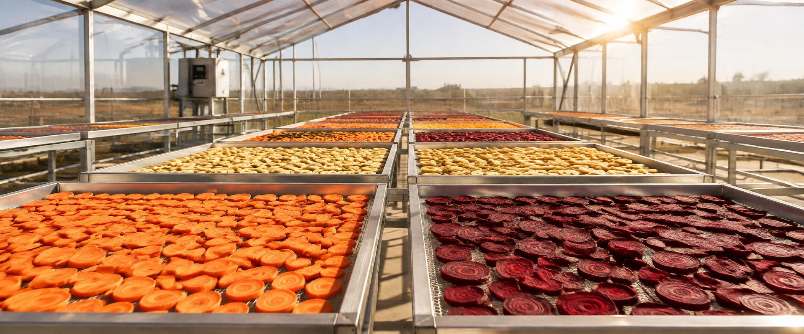

Every batch is tested against FSSAI standards before it leaves our facility.
02
Cost Effective
Competitive bulk pricing on every product, with no compromise on grade.
03
100% Natural
No added colours. No preservatives. No artificial sweeteners.
04
From Farm to Factory
We buy produce directly from farmers and move it in our own trucks.
About Sasvata
Best of dry food powders, built on regulatory discipline.
Sasvata offers the “Best of Dry Food Powders”. It was Pagadala Praveen who started the company in Nellore, Andhra Pradesh with the idea of dehydrating food powder. As a result, we created a seasonal business that would allow consumers to purchase large quantities of dried fruit and vegetable powder on the market.
As of today, most of our products are sold through wholesale order. In spite of the fact that we are a startup organization, we adhere to regulatory standards in terms of qualitative and quantitative values. Our products are of the highest quality and we provide excellent customer service.
We also strive to ensure that our prices are competitive. Our ultimate goal is to provide a healthy and sustainable choice for our clients. We offer end-to-end service that few can deliver on, and our product portfolio is among the most robust in the industry.
We ensure 100% satisfaction guaranteed for our clients.
Trade Ready
Import & Export Licensed
Sasvata Foods holds the licences required to serve domestic and international bulk buyers.
Delivery Record
3 × 40HC Containers
Ginger supplied across three 40-foot high-cube container shipments.
Products
Bulk powders, packed to your specification.
Particle size, packaging format and batch size are set by your requirement. Send an enquiry against any product below.
Dehydrated Banana Powder
Mild, naturally sweet base powder
Dehydrated Carrot Powder
Beta-carotene rich, bright orange
Dehydrated Beetroot Powder
Deep natural colour, earthy sweetness
Dehydrated Ginger Powder
Aromatic, pungent, spice grade
Moringa Powder
Leaf powder, high nutritional value
Tomato Powder
Tangy, lycopene rich
Onion Powder
Savoury, free flowing
What We Do
Seven stages between the field and your bulk order.
Every order moves through the same disciplined line — from the farmer's field to sieved, bulk-packed powder ready for dispatch.
01
Stage 01
Selection
We work directly with local farmers to select high-quality, fresh produce. Once quality meets our standards we purchase it and transport it from the farms to our processing facility in our own trucks — freshness kept intact from farm to factory.
02
Stage 02
Cleaning
Produce is meticulously washed in a bubble washer to eliminate dirt, pesticides and other impurities.
03
Stage 03
Peeling and Cutting
Depending on the fruit or vegetable, produce is peeled and cut into uniform pieces to allow even drying. In some cases peeling is omitted.
04
Stage 04
Dehydration
Prepared pieces are dried using the method best suited to the produce and the season.
Solar Drying
Advanced solar drying naturally preserves freshness, flavour, colour and nutritional value. Controlled drying gently removes moisture using clean solar energy, extending shelf life while reducing the need for artificial preservatives.
Electric Drying
Carefully controlled temperature and airflow gently remove moisture while maintaining natural flavour, colour, texture and nutrition — giving safe, hygienic, consistent output all year round, whatever the weather.
05
Stage 05
Grinding
Dried fruits, vegetables and grains are finely ground in hygienic, controlled conditions for a consistent texture and particle size, suitable for powders, food ingredients and varied applications.
06
Stage 06
Sieving and Packaging
After grinding, the product is sieved to a uniform particle size according to each client's specification, then bulk packed in the sizes and formats that suit safe handling, storage and transportation.
07
Stage 07
Storage
We follow an order-based production model rather than holding long-term inventory. Finished product is held briefly in a clean, cool, dry environment to preserve quality and freshness until dispatch.
01
Prepare on Order
Production runs against your order, not against our shelf.
02
Nothing Added
No added colours, preservatives or artificial sweetness.
03
Flexible Bulk Packing
Packaging sizes and formats tailored to each customer.

“Our mission is the driving force behind our passion for our work.”
Our Team
Quality, R&D and production, working as one.
Our team brings together experienced professionals across Quality Control, Food Safety & Quality Assurance, R&D, Product Development and Production. With expertise at every stage, our teams work together to deliver products that meet client specifications and business requirements.
Our Quality Control Coordinators and Food Safety & Quality Assurance professionals maintain consistent quality, food safety and process compliance — giving clients greater confidence in every batch.
Our R&D and Product teams focus on product development, customization and process improvement, responding to specific product, particle size, processing and application requirements. Our Production Heads and Production Leads oversee manufacturing to maintain consistency, efficient execution and reliable order fulfilment.
What this means for our clients
Consistent Quality
Controlled processes help deliver uniform products from batch to batch.
Customer-Specific Requirements
Our R&D and product teams work with clients to meet specific product and application needs.
Food Safety & Quality Assurance
Dedicated quality and food safety teams support compliance and product reliability.
Reliable Production
Experienced production teams help ensure orders are executed efficiently to agreed requirements.
Responsive Collaboration
Cross-functional teams address requirements, quality expectations and development needs together.
Long-Term Business Support
We build dependable relationships through consistent products, clear communication and reliable execution.
Enquiry
Tell us what you need and in what volume.
Share your product, quantity and application. Our team will come back with specification, packaging options and pricing for your bulk order.


 Stage 01
Stage 01 Stage 02
Stage 02 Stage 03
Stage 03 Stage 04
Stage 04 Stage 06
Stage 06